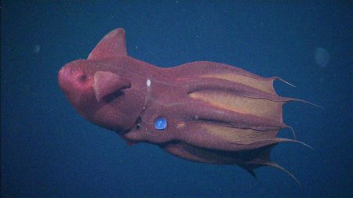

Squids |
|
|  |
Vampire squidThe vampire squid is considered a living fossil, bearing a striking resemblance to its ancestors from 300 million years ago. It inhabits depths of 600 to 900 meters below the ocean's surface and is found in tropical and temperate waters worldwide. Despite its ominous name, the vampire squid is not a predator; instead, it feeds on marine snow—organic debris that drifts through the deep ocean. |
Glass squidGlass squids inhabit the twilight zone at depths of up to 2,000 meters below the ocean's surface. Lacking a protective shell, they rely on transparency to avoid predators. This effect is achieved by closing their chromatophores—pigment sacs that control coloration—and using specialized light organs called photophores to mask the shadows of their opaque body parts. |
|